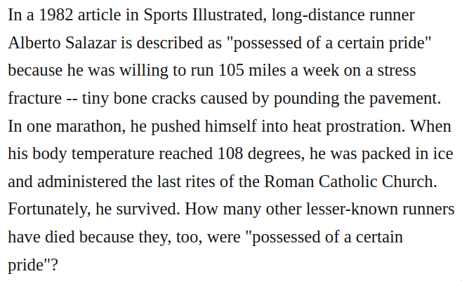

Inspired by incessantpain's and vashti's excerpt pages (i, ii, resp.)
Because weakness is great, and strength is worthless. [...] When a tree is growing, it's tender and pliant. But when it's dry and hard, it dies. Hardness and strength are death's companions. Pliancy and weakness are expressions of the freshness of being. Dao de Jing via Andrei Arsenyevich Tarkovsky
Crossbreed by Franz Kafka
A red glow suffused them. [...] They appeared to pant with a secret life. Revelation by Flannery O'Connor
But the Holy Ghost, emblazoned in ice instead of fire, continued, implacable, to descend. An Enduring Chill by Flannery O'Connor
Yes, when in mournful moments we want to strengthen and encourage our minds by contemplating those great men, your chosen instruments, who in severe spiritual trials and anxieties of heart kept their minds free, their courage uncrushed, and heaven open, we, too, wish to add our witness to theirs in the assurance that even if our courage compared to theirs is only discouragement, our power powerlessness, You, however, are still the same, the same mighty God who tests spirits in conflict, the same Father without whose will not one sparrow falls to the ground. The Expectancy of Faith by Soren Kierkegaard
Homage to Soren Kierkegaard by Dana Gioia
dein goldenes Haar Margarete
dein aschenes Haar Sulamith your golden hair Margarete
your ashen hair Shulamit
Todesfuge/Death Fugue by Paul Celan
Niemand zeugt für den
Zeugen. No one
bears witness for the
witness.
Aschenglorie/Ashglory by Paul Celan

The Jim Fixx Neurosis: Running Yourself to Death by Richard M. Restak
Here I had the opportunity to work next to the most brilliant mathematician of his generation. But the job entailed such onerous duties that only someone with an iron constitution could survive. My constitution, it so happened, was not made of iron. It was made of reeds and bamboo sticks, very satisfactory under moderate pressures, but completely incapable of standing a huge overload. But what choice had I? From manuscript written by Edgar R. Lorch
Accelerationism: how a fringe philosophy predicted the future we live in by Andy BeckettThe Idiot by Elif Batuman
They are not condemned to know, for instance, that the works that are usually translated into English are those that are both thematically and linguistically the easiest to translate, that often only reinforce the worldview constructed by the English language, and preferably that entertain readers with just the right kind of exoticism. The Fall of Language in the Age of English by Minae Mizumura
Then she looked around, calm, serene, courageous in her own way, she looked at her house, her porch, the place where the cars used to park, the red bicycle, the trees, the garden path, the fence, the windows all shut except for the one I had opened, the stars twinkling far away, and she said, That's how literature is made in Chile. I nodded and left. While I was driving back into Santiago, I thought about what she had said. That is how literature is made in Chile, but not just in Chile, in Argentina and Mexico too, in Guatemala and Uruguay, in Spain and France and Germany, in green England and carefree Italy. That is how literature is made. By Night in Chile by Roberto Bolaño
In the Reading Room of Hell by Roberto BolañoThe Country Wife Dana Gioia
He touched a wrestling state-championship banner hanging in the foyer with the distance of an anthropologist or ghost. The Topeka School by Ben Lerner
The Savage DetectivesUnderworld
"It has been calculated that each copy of the Gutenberg Bible...required the skins of 300 sheep." - from an article on printing
I can see them squeezed into the holding pen
behind the stone building
where the printing press is housed,
all of them squirming around
to find a little room
and looking so much alike
it would be nearly impossible
to count them,
and there is no telling
which one will carry the news
that the Lord is a shepherd,
one of the few things they already know.
Flock by Billy Collins
Nam Sibyllam quidem Cumis ego ipse oculis meis vidi in ampulla pendere, et cum illi pueri dicerent: Σίβυλλα τί θέλεις; respondebat illa: άποθανεῖν θέλω.
With my own eyes I saw the Sibyl at Cumae hanging in a bottle and, when the attendants asked her what she wanted, she replied, "I want to die." epigraph to The Waste Land by T. S. Eliot
And the Sibyl, with raving lips uttering things mirthless, unbedizened, and unperfumed, reaches over a thousand years with her voice, thanks to the god in her. On the Pythian Oracle by Plutarch
Good Old Neon by David Foster WallaceWhereof one cannot speak, thereof one must be silent.Tractatus Logico-Philosophicus by Ludwig WittgensteinOrdet dir. Carl Theodore DreyerThe Card Counter dir. Paul SchraderThe Seventh Continent dir. Michael HanekeFesten dir. Thomas VinterbergHarmony Lessons dir. Emir BaigazinMother Joan of the Angels dir. Jerzy KawalerowiczBeau Travail dir. Claire Denis. The tattoo reads: Sert la bonne cause et meurt. Serve the good cause and die.Where is the Friend's House dir. Abbas KiarostamiDoukyuusei dir. Shōko Nakamura